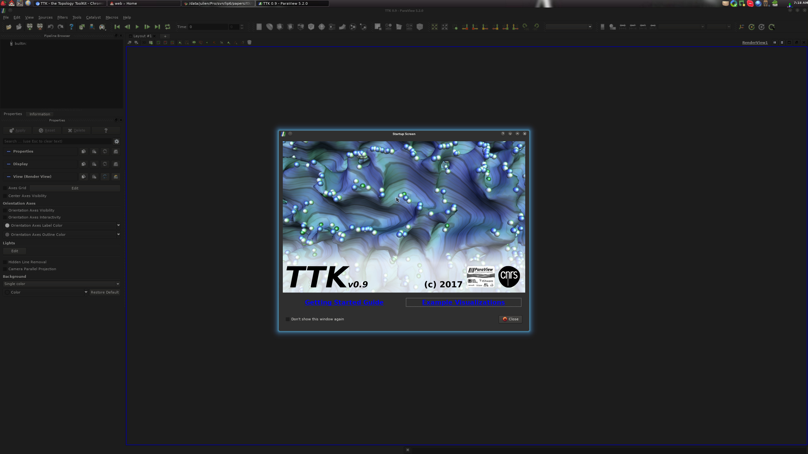
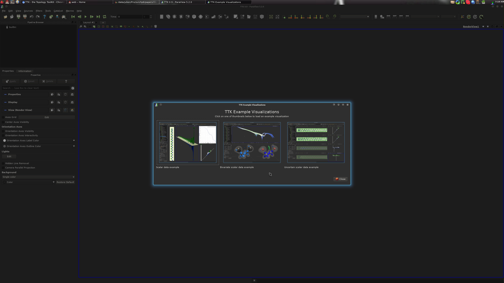
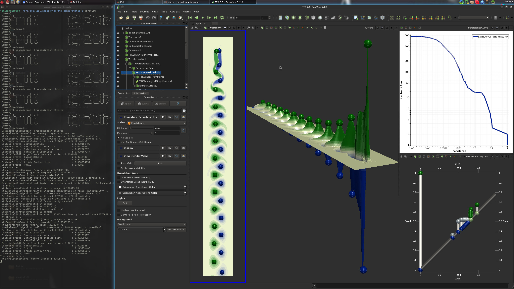
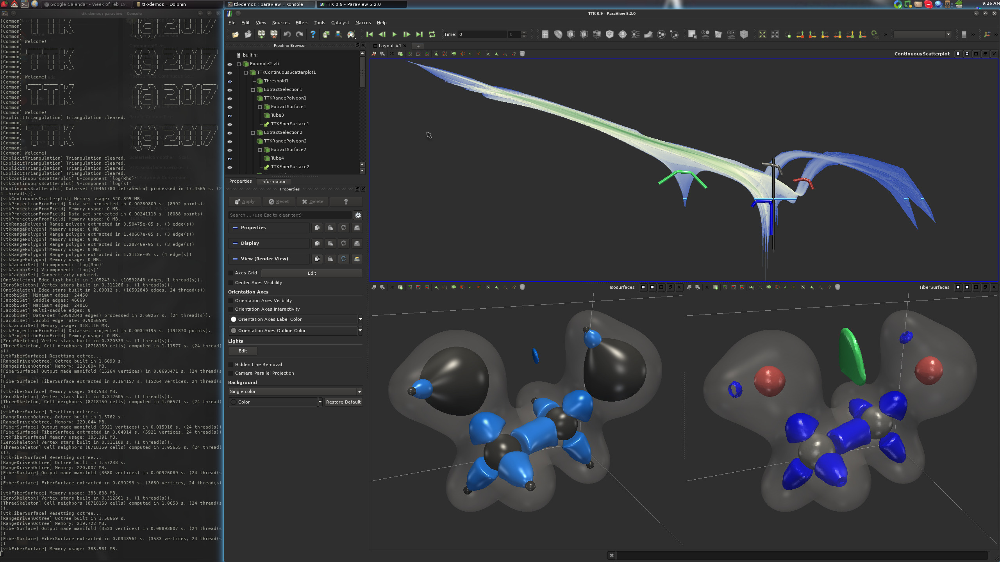
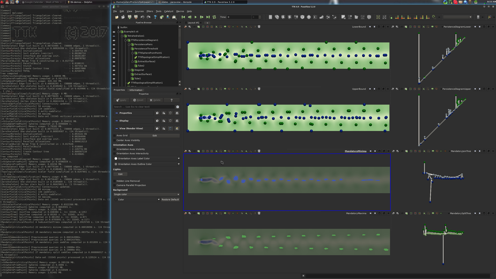

Please find below detailed instructions for the
installation of
TTK 1.2.0 under Ubuntu Linux.
These specific notes describe the installation procedure for a
Ubuntu Linux 20.04 operating system (but the process should be very
similar
for other versions).
For earlier versions of TTK, please checkout the following instructions:
TTK 1.1.0
1. Downloading the packages
Please checkout and review our
download page and download the following packages:
·
ttk-paraview-v5.11.1-ubuntu-20.04.deb
·
ttk-1.2.0-ubuntu-20.04.deb
2. ParaView installation
Assuming you downloaded the above packages in the
~/Downloads/ directory, open a terminal and enter the following commands (omit the
$ character):
$ sudo apt-get install ~/Downloads/ttk-paraview-v5.11.1-ubuntu-20.04.deb
3. TTK installation
Assuming you downloaded the above packages in the
~/Downloads/ directory, open a terminal and enter the following commands (omit the
$ character):
$ sudo apt-get install ~/Downloads/ttk-1.2.0-ubuntu-20.04.deb
4. Checking your TTK installation
If you applied all the above steps successfully, you
can now open a terminal and type the following command to load your
TTK-patched ParaView:
$ paraview
At this point, you should see the following TTK startup screen:

On this screen, clicking on the "Example Visualizations" link should bring you
to the TTK built-in example screen:

From there, clicking on one of the three buttons should generate one of the
following three visualizations:



If this is the case, congratulations!
You have just successfully installed
TTK on your system!
Now, please visit our tutorial page to watch video
tutorials showing how to use TTK with ParaView with concrete examples and how to
use it from your own Python or C++ code or how to extend TTK by writing up your
own module!